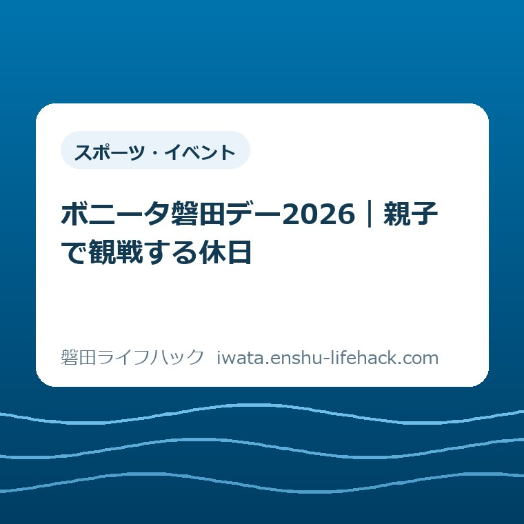
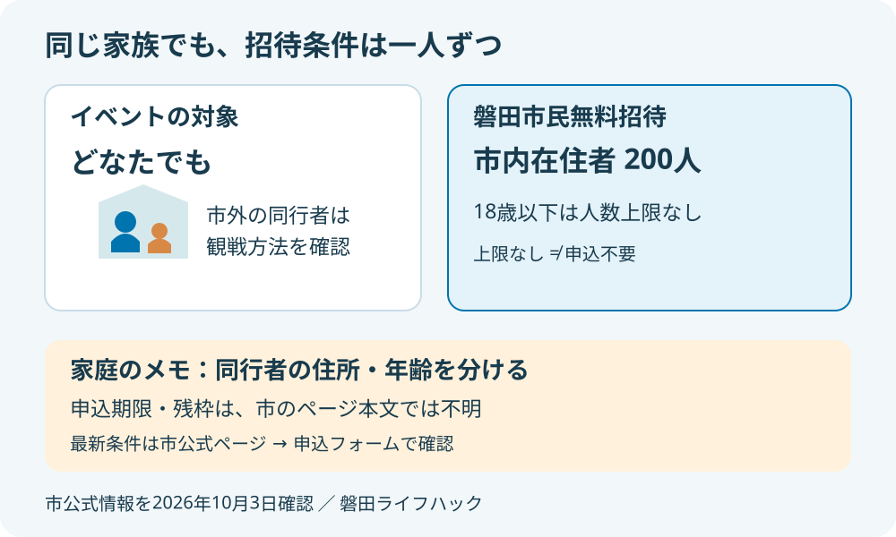
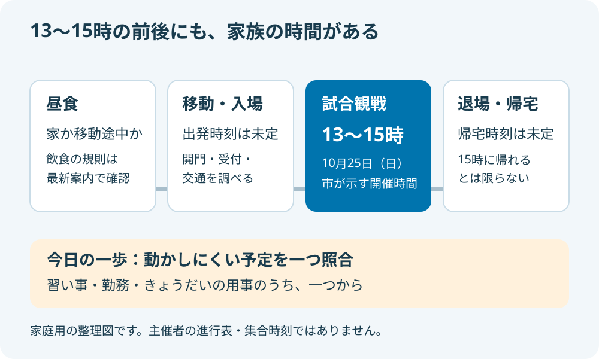

スポーツ・イベント
ボニータ磐田デー2026｜親子で観戦する休日

この記事の要点
Q. 10月25日、子どもとボニータを見に行ける？
A. 磐田デー2026は10月25日（日）13～15時、ヤマハスタジアムで開催予定です。市内在住者200人を無料招待し、18歳以下は人数上限なし。ただし申込期限・残枠は市の開催ページ本文では分かりません。まず家族の予定を一つ照合し、招待の最新条件は市公式案内から確認してください。
親子の休日は、招待条件と家族の都合を分けて考える
子どもと地元チームを応援したくても、休日を一日空けるのは簡単ではありません。午前の習い事を迎えに行く人、昼食を用意する人、きょうだいの予定を調整する人がいます。観戦の案内を開く前から、保護者はすでに送迎と休日調整の手間を引き受けています。
無料招待を利用できるかは、住所や年齢などの個別条件で変わります。磐田市の開催案内では、イベントの対象は「どなたでも」です。一方、市民無料招待は磐田市在住の方が対象です。市外に住む祖父母なども一緒に出かける場合は、同行者全員が同じ条件になると思わず、一人ずつ分けて考えてください。
この記事は、大石浩之（磐田市／不動産業）が2026年10月3日に市公式情報を確認し、家庭の段取りに置き換えたものです。観戦経験を語る記事ではありません。開催要項として確認できたことと、家族の負担を減らすための私の提案を分けて記します。
今日することは一つです。10月25日（日）の13～15時と、家族の予定を一つ照合する。習い事、勤務、きょうだいの用事のうち、動かしにくいものを選べば十分です。申し込みも交通手段も一度に決めず、まず観戦が候補に入るかを確かめるところから始めます。
公式概要——10月25日の最終戦をヤマハスタジアムで
磐田市の「磐田デーwithヤマハ発動機」開催ページは、2026年9月29日更新です。2026年10月25日（日）13～15時、ヤマハスタジアムで開催と案内されています。対戦は静岡SSUボニータ対ボンズ市原レディース。プレナスなでしこリーグ1部の最終戦です。
市民無料招待の欄には、磐田市在住者200人、18歳以下は人数上限なしと記載されています。「200人だから子どもも同じ人数枠」とは読まない点が、この案内で見落としたくないところです。ただし、人数上限がないことから申込不要とまでは判断できません。
市の開催ページには申込フォームへのリンクがあります。2026年10月3日の確認では、ページ本文に申込期限や残枠の記載は見当たりませんでした。リンクがあるだけで受付中と断定せず、申し込む段階で市公式ページから最新のフォームと注意事項を確認してください。
磐田市の別ページ「市内に本拠地を置くスポーツチームを応援しよう」では、磐田市を静岡SSUボニータのホームタウンとして紹介しています。地元のチームを知る入口として、競技を習い始める前に試合を見る選択もあります。応援と習い事の入会は、別々に決められます。

良い点——観戦料の心配を減らし、地元チームを知れる
私が無料招待の良い点だと考えるのは、子どもが試合を楽しめるか分からない段階でも、家計の負担を抑えて候補にできることです。チケット代が気になっていた家庭には、観戦のきっかけになります。最初から熱心なサポーターである必要はありません。
18歳以下に人数の上限を設けない案内も、親子の予定を考えるうえで助けになります。きょうだいで観戦したい家庭は、子どもの人数を理由に最初から諦めずに済みます。その良さを実際に使えるものにするには、保護者を含む申込方法まで確認できることが欠かせません。
市公式では、ジュビロ磐田や静岡ブルーレヴズのスポーツ体験ブース、ハロウィンや市民参加型企画などを予定しています。イベント情報は随時公開するとの案内です。開催予定という段階なので、体験できる内容や時間を今から固定した予定には入れないでください。
私は、観戦以外の入口が用意される点も評価します。サッカーの試合を見たい子と、身体を動かす遊びに関心がある子では、楽しみの入り口が違います。ただ、親が全部を回る計画にすると休日が忙しくなる。公開された内容から、子どもが楽しみにするものを一つ選ぶ程度がよいと考えます。
注文したい点——招待の案内から当日の動きまでつながると助かる
私が案内に注文したい点は、無料招待を見つけた保護者が、申し込みと当日の見通しを同じ流れで確認できることです。特に期限や受付状況は、家族の勤務を相談する前に知りたい情報です。市の開催ページ本文だけでは、その判断材料がそろっていません。
開門時刻、招待者の受付場所、駐車場の利用方法も、子連れでは家を出る時刻に直結します。確認した市のページ本文からは詳細を判断できませんでした。私は、順次公開する情報への入口が分かりやすくまとまると、保護者が複数の画面を行き来する手間を減らせると考えます。
ここで分からないと書いた項目は、用意がないという意味ではありません。今後の案内や申込画面で説明される可能性があります。記事の空欄を想像で埋めず、何が分かれば出発できるかを家庭で整理する。そのために未確認の項目も残しています。
観戦と体験会は、子どもに求める準備が違う
ボニータの試合観戦は、競技を自分で行う教室や体験会とは目的が違います。ボールを蹴れるか、ルールを全部知っているかで参加の価値を決める必要はありません。親子で同じ場面を見て、気になったことを話す休日として考えることができます。
子どもが身体を動かす機会も探しているなら、いわたホームタウンスポーツフェスティバルの記事で、体験会を選ぶ際の考え方を読めます。募集日程は観戦イベントと別です。過去の募集記事を、今申し込める催しの一覧として使わないようにしてください。
継続して通う活動を検討する段階では、スポカルいわたとクラブの違いを整理した記事も参考になります。観戦で興味が出た日に入会まで決める必要はありません。通う曜日、送迎できる人、本人の希望は、休日の一回の観戦とは分けて相談できます。
昼食と移動——13時に合わせて家を出るわけではない
市が案内する13～15時は開催時間であり、家を出てから帰るまでの時間ではありません。観戦前には移動、入場、座席への移動があります。昼食をどうするかも家族の予定に加わります。以下は家庭用の考え方で、主催者が示す集合時刻や進行表ではありません。
昼食は「会場で何か食べればよい」とだけ決めず、家で済ませるか、移動の途中で取るかを仮に選んでおくと動きやすくなります。売店の営業内容や混雑、飲食物の持込規則はこの記事では確認できていません。会場の飲食を前提にする場合は、当日の案内が出てから決め直す余地を残してください。
自家用車で行く家庭は、ヤマハスタジアムという目的地と、当日に使える駐車場を別々に確かめます。普段知っている周辺の道があっても、この試合の駐車場の場所、料金、利用条件までは決まりません。無料招待から駐車料金も無料だと推測しないことです。
公共交通を選ぶ家庭は、到着時刻だけでなく帰りの候補も見ておくと、観戦後の動きが具体的になります。この記事では臨時便や所要時間を保証しません。移動に必要な時間を調べたら、家庭のカレンダーに書いた13～15時の前後へ足してください。

帰りの送迎——15時は帰宅の約束に使わない
15時という案内は、その時刻に家へ帰れることを意味しません。試合の進行や退場の動きによって、会場を離れる時刻は変わります。観戦後すぐに別の場所へ送迎する家庭は、二つの予定が無理なくつながるかを確認する必要があります。
行きと帰りの担当が違う場合は、「終わったら迎えに来て」だけでは待つ場所が決まりません。主催者の案内に従って乗降できる場所を確かめ、連絡するタイミングを共有する提案です。道路上での待機や、会場入口の近くなら停められるという想定は避けます。
一人の保護者がきょうだいを連れていく家庭なら、役割を無理に分担する必要はありません。移動中に必要な荷物を一つにまとめ、帰宅後の買い物などを重ねすぎない形にするだけでも計画は変わります。誰かに頼めることを前提にせず、自分が動ける範囲から考えてください。
仮に「16時には別の用事へ出たい」という家庭なら、15時終了予定と一時間空いているだけで大丈夫とは言えません。退場、移動、帰宅後の準備を差し引いて考えます。16時は説明のための仮の時刻です。間に合う見込みが立たなければ、観戦を見送る判断も段取りの一つです。
子どもとの観戦——見る場所を一つ決めておく
初めての観戦では、子どもにルールの予習を全部させるより、何を見ると面白そうかを一つ話す方法を私は勧めます。例えば、ボールを持っていない選手がどこへ走るかを見る。得点だけを待つより、親子で話せる場面を探しやすくなります。
保護者も詳しくなければ、「今のは分からないね」で構いません。応援の作法や会場で守ることは公式案内で確かめ、周囲の観戦を妨げない範囲で楽しむ。子どもが質問したとき、知っているふりをするより、一緒に試合を追う時間にする提案です。
子どもが途中で疲れた場合にどうするかも、出発前に短く話しておきたいところです。休憩場所、途中退場や再入場の扱いは当日の案内で確認してください。「いつでも出入りできる」と先に約束すると、会場の規則と合わない場合があります。
観戦後に身体を動かしたくなったら、別の日に使える場所を磐田市のスポーツ施設の選び方で探すこともできます。試合を見た帰りに練習場所まで寄る計画を追加しなくても、興味は持ち帰れます。休日の最後まで予定を埋める必要はありません。
持ち物——買い足す前に、会場の規則と手元の物を確認する
親子観戦の持ち物は、天候と子どもの年齢で変わります。ここで挙げるのは、上着、タオル、連絡できる端末などを手元から選ぶための提案です。主催者が指定した持ち物一覧ではありません。飲食物、雨具、応援用品などの持込条件は、最新の会場案内を優先してください。
招待の受付に必要な提示物も、想像で決めないでください。申込完了画面や通知の扱い、住所や年齢の確認方法が案内されたら、その指示に沿って準備します。住所確認書類が必須だとこの記事で断定することも、何も要らないと書くこともしません。
家族に申込を任せる場合は、誰が受付の案内を持っているかだけ共有しておくと安心です。個人情報の入った画面を大人数へ転送せず、同行する保護者が必要な情報を確認できる範囲にします。端末の充電も、観戦写真よりまず連絡と受付に使う分を考えておきます。
対案・結論——今日は家族の予定を一つだけ照合する
ボニータ磐田デーを休日の候補にするため、今日確かめるのは10月25日の家族の予定を一つです。共有カレンダーでも紙の予定表でも構いません。13～15時に重なる予定があるか、動かせない用事は何かが分かれば、最初の確認は終わりです。
家庭用メモには「10月25日（日）、観戦は13～15時。往復は別」と一行で書けます。送迎担当が決まっていなければ未定のまま残してください。参加できるか分からない段階で、子どもへ行けると約束しないことも、家族の調整を守る方法です。
日程が合いそうなら、次に市公式ページで招待の最新条件を確認します。同行者の住所・年齢、申込方法、受付状況を確かめ、案内に従って手続きする順番です。フォームを送信しただけで招待が確定するかも、画面や通知の説明を読んで判断してください。
イベントが近づいたら、開門・受付・交通・企画の情報が更新されているかを確認します。2026年10月3日の記事を当日の案内の代わりにはできません。予定を仮に置く日と、当日の動きを固める日を分ければ、まだ出ていない情報を探し続けずに済みます。
大石の視点——無料なのは入場料で、親の休日ではない
私はこう考えます。入場料が無料でも、親の休日まで無料にはならない。送迎、食事、きょうだいの調整に使う時間は、誰かが払っています。その負担を数えずに「地元だから応援に行こう」とだけ言うのは雑です。招待の良さは、家族が実際に動ける予定とつながってこそ生きます。
私にも迷いがあります。せっかく体験ブースや季節の企画があるなら、親子でゆっくり楽しむ日を勧めたい。しかし、昼食と移動だけで手いっぱいの家庭へ、早く来て全部回る予定を勧めるのは違う。だから、詳しい時間が出るまでは観戦を中心に置き、前後は空欄でもよいと考えています。
不動産の仕事をする私が暮らしを見るときも、地図の距離だけでは一日の動きは決まりません。誰が移動できるか、帰った後に何が残るかまで考えたい。これは今回の観戦を実際に経験した話ではなく、家族の段取りを優先する私の判断です。応援したい気持ちと、無理なく帰れる予定を一緒に守りたいと思います。
よくある質問
ボニータ磐田デー2026の無料招待と親子の移動について、開催ページを読む際に分けておきたい疑問を整理します。
市外在住の家族も無料招待の対象ですか？
磐田市の開催案内では、イベントの対象はどなたでもですが、市民無料招待の対象は磐田市在住者です。市外在住の祖父母などへ同じ招待条件が適用されるとは判断できません。家族で一緒に観戦する場合は、同行者ごとの条件と通常の観戦方法を市公式ページから確認してください。
18歳以下なら申し込みなしで入れますか？
市公式ページには、無料招待について18歳以下は人数上限なしと記載されています。ただし、人数上限がないことと申込不要であることは別です。子どもの登録方法、保護者の申し込み、当日の提示物は最新の案内に従ってください。この記事では受付中や残枠の有無も断定していません。
13～15時だけ予定を空ければ大丈夫ですか？
市公式の13～15時は2026年10月25日の開催時間です。昼食、往復の移動、入場と退場にかかる時間は別に考えます。開門や受付、駐車場の詳細は最新の案内で確認してください。特に15時を帰宅時刻として次の予定を入れず、家庭ごとの移動時間を足して判断する必要があります。
本記事は非公式の生活案内です。制度・招待条件・数値・当日の運用は変わる場合があります。個別の参加可否と最新の申込・開催情報は、最後に必ず磐田市の公式ページで確認してください。
参考にした公式情報
- 磐田市「10月25日（日曜）静岡SSUボニータ最終戦 磐田デーwithヤマハ発動機」（2026年10月3日確認）
- 磐田市「市内に本拠地を置くスポーツチームを応援しよう」（2026年10月3日確認）
最終確認日：2026-10-03 ／ 本記事は公表情報と執筆者の見解を分けて記載しています。制度・数値・公開状況は変更される場合があるため、最新情報は磐田市公式ページでご確認ください。